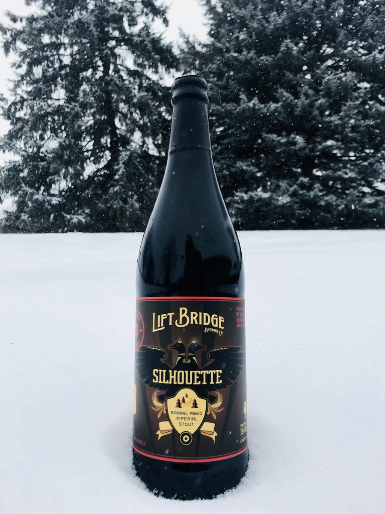

HOME
STOUTS
Silhouette Stout
Lift Bridge Brewery
Barrel aged Silhouette is as deep and dark as the thick Northern Woods. It’s brewed in the style of an Imperial Stout. Aromas of coffee, molasses, chocolate and prune meld with an intense dark roasted character. This beer is complex, rich and full bodied.
Lift Bridge Brewing Company is a Minnesota-based craft brewery located in Stillwater, Minnesota. It is Minnesota's 6th largest Craft brewery, well known for its flagship beers Farm Girl Saison® and Hop Dish® IPA. Lift Bridge currently distributes in Minnesota, Wisconsin, North Dakota and South Dakota. In 2018 the brewery produced over 19,000 barrels.
Check out their site HERE 